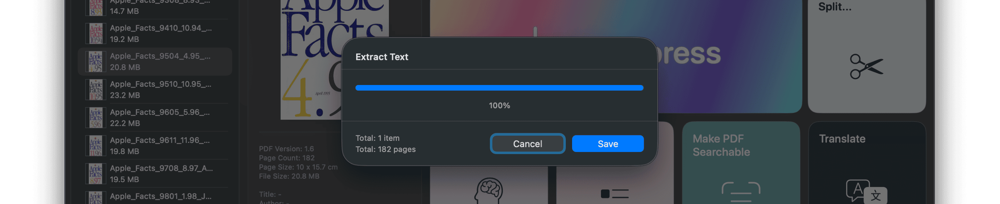
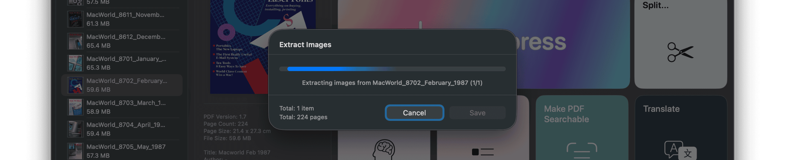
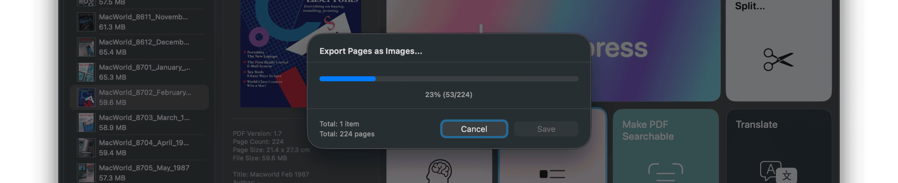
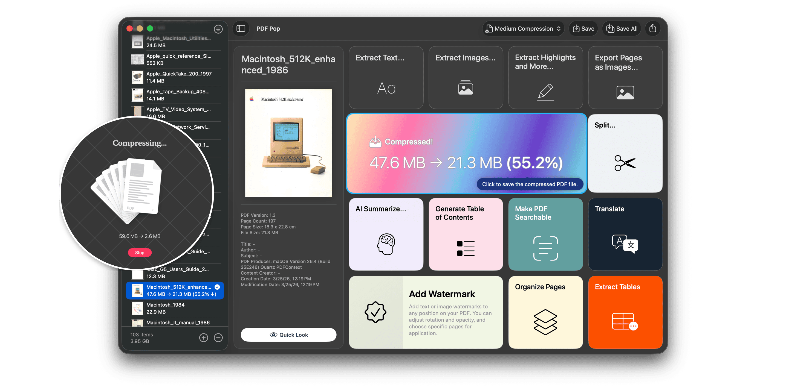
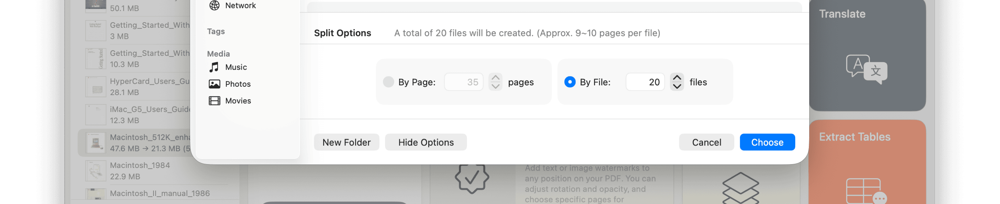
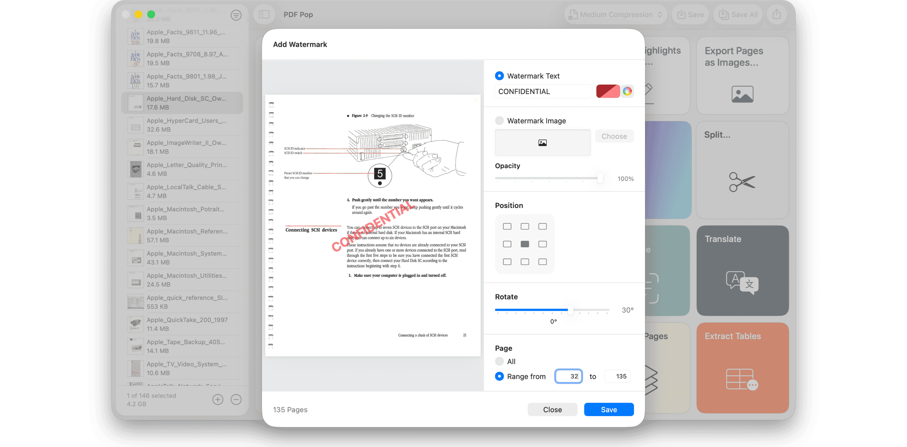
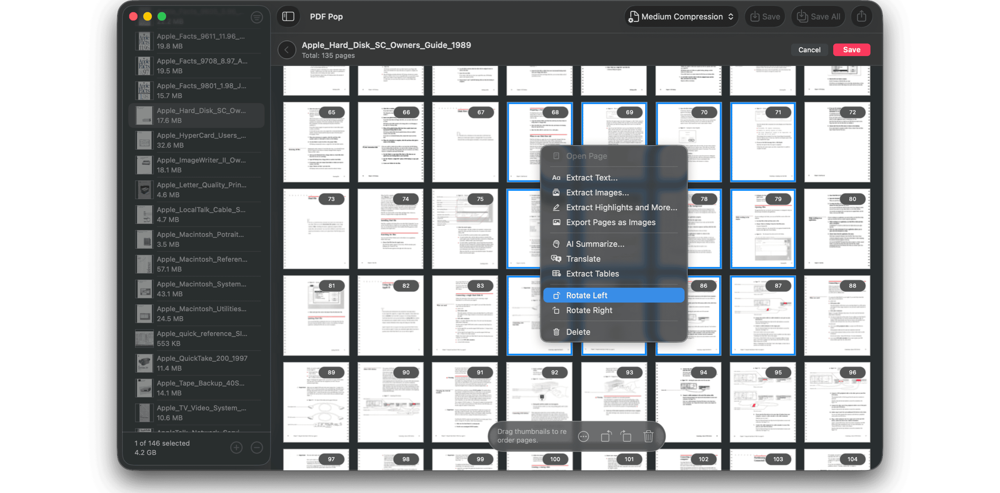
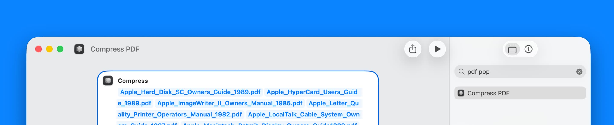

PDF Pop
13 Powerful PDF Tools. One Elegant App.
The ultimate PDF utility for Mac. From on-device AI summaries and smart TOC generation
to precision table extraction—everything you need is now in one seamless app.

1. Seamless Text Flow
Wake up the text hidden within your PDFs. Extract and save all text with precision in just one click. No complex steps—just pure text, delivered straight to your hands.

2. The Gold Standard of Image Extraction
Retrieve every image in your documents with original quality. Simply choose your preferred format: JPEG, PNG, or TIFF. Intelligent duplicate filtering ensures identical images are saved only once for a cleaner output.

3. Annotations Rediscovered
From highlights, underlines, and strikethroughs to precious notes and links—we organize every trace you've left, page by page. Export to Markdown, CSV, or HTML to continue your insights anywhere.
4. Pages as Captured Photos
Convert every PDF page into high-resolution images. Save them as JPEG, PNG, or TIFF while maintaining the original layout—perfect for presentations or web content.

5. Uncompromising Optimization: PDF Compression

Reduce file size without sacrificing quality. Choose from three precision presets or take full control with custom modes for image resolution and quality. Save storage space and accelerate your transfers.

6. Effortless Split and Merge
Don't let massive, hundred-page documents overwhelm you. Split and save by page range or file units with ease. It’s the most intuitive way to break down heavy files.

7. On-Device AI: Where Security Meets Intelligence
Your data never leaves your Mac. Experience Hierarchical Summary, powered exclusively by Apple’s on-device technology.
Our 3-step tree structure captures the context of large documents with precision, summarizing key points and logical threads perfectly—all without an internet connection. (requires macOS 26 or higher)
8. Automatic TOC: Finding the Hidden Structure
Let us automatically map out your thickest PDFs. PDF Pop analyzes the document structure and intelligently suggests titles and subtitles. Simply drag and drop suggested items to create a hierarchical Table of Contents with chapters and sections. Give your complex documents a perfect navigation system.
9. OCR: Beyond the Limits of Search
Breathe life into locked, scanned documents. Powered by Apple’s advanced Vision technology, convert image-based PDFs into searchable text. Now you can find the exact word you need in any document.
10. Break Language Barriers: 21-Language Translation
Read PDFs in 21 languages from around the world. Translate entire documents or just the sections you need. Expand your knowledge in the most natural language for you. (requires macOS 15 or higher)
11. Ultimate Copyright Protection: Watermarks
Share your valuable work with confidence. Quickly add watermarks using text or images to the entire document or specific pages. It’s the most sophisticated way to protect your rights.

12. Intuitive All-in-One PDF Editing
Delete, rotate, and reorder pages with simple drag-and-drop. Edit as naturally as handling paper while previewing in our beautiful built-in viewer. Experience an innovative environment where you can instantly summarize, translate, and extract data from selected pages.

13. Unlock Data Value: Table Extraction
Stop retyping table data from PDFs. We accurately recognize complex table structures and convert them into reusable formats like Markdown, CSV, and HTML. Transform difficult-to-process data into ready-to-use information. (requires macOS 26 or higher)
Apple Shortcuts Integration
Seamlessly connected with Apple Shortcuts.

Automation, Supercharged.
Automate PDF Pop’s powerful compression engine with Apple Shortcuts. Streamline complex workflows and optimize large PDFs instantly from Finder or the Menu Bar. Experience the smartest way to harness the full power of macOS.
Support
We're always here to help with any question or comments - feel free to contact us.
PDF Pop's 'Help Menu > Send Feedback...' is perfect for privately sending us issues and feedback.
Buy PDF Pop for Only $3.99
Category: Productivity
Latest Version: 1.0.2 ()
Compatibility: Requires macOS Sonoma 14.6 or later, for Apple Silicon Macs or intel-based Macs